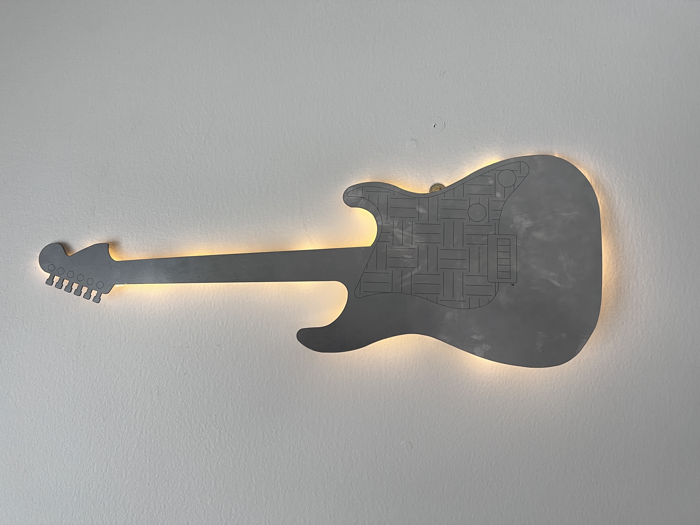

AIR COMPRESSOR / DART LAUNCHER
Independent Project

What?
- Designed and built a pneumatic dart launcher powered by an air compressor
- Explored the mechanics of pressure-regulated propulsion systems
How?
- Used PVC piping and custom valves to regulate air pressure and release
- 3D printed components to hold the darts and align the firing barrel
- Tested various nozzle designs for range and stability
Results
- Achieved consistent launches with adjustable power output
- Learned key safety considerations for pneumatic builds
GUITAR WALL DECORATION
Personal Project

What?
- Designed and fabricated guitar wall decoration based off of a real-life model
How?
- Utilized AutoCAD to create vector file
- Machined on Fablight laser cutter
Results
- Fully portable light-up guitar decoration